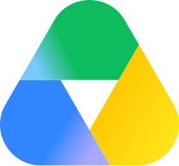

Answers from your help center
Relay reads your help articles and past replies, and shows where each answer came from.
Relay is an assistant for online shops. It answers customer emails, chats and calls from your help center and order data, and passes the hard cases to a person.
Relay reads your help articles and past replies, and shows where each answer came from.
It picks up tickets in Zendesk, replies and updates the status, like a person on your team.
Refunds over your limit or an upset customer go straight to a person, with the full history.
Choose what Relay may do on its own, from refunds to order changes.
Import help articles, saved replies and policies from Zendesk, Notion, Confluence, Google Docs or PDF files.

Warranty termsGoogle DriveSet the chat widget’s colours, corners and texture.
Search every reply your team has sent.
Every Monday you get a short report by email and in Slack.
of all conversations, from the first message to solved, with no one on your team stepping in.
Day and night, weekends included. Before Relay it was 6 hours.
Relay reads from your helpdesk, store and docs, and writes back where your team works.
“We used to need four people on the inbox every weekend. Now Relay answers most of it, and we check the rest on Monday morning.”
fewer people on the Northwind inbox at weekends since March
For a small shop with one support inbox.
Start a trialFor teams that answer customers every day.
Start a trialFor several brands, stores and languages.
Talk to salesAnswers your support inbox in your tone, with the right policy behind each reply.
Email supportA chat widget for your site that answers at once and passes on to your team.
Chat widgetTakes phone calls, speaks 32 languages and texts the customer what was agreed.
Phone supportRelay suggests the exact line in a pull request, and the author applies it from the comment.
Every test file runs, and you see each result as it arrives, with the time it took.
See each step of a build as it runs, which one is running now and how long the whole run took.